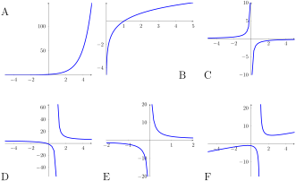

The limit being equal to positive infinity means that we can make the output of \(f(x)\) as large a positive number as we want as long as we are sufficiently close to \(x=a\text{.}\) Similarly, the limit being equal to negative infinity means that we can make the output of \(f(x)\) as large a negative number as we want as long as we are sufficiently close to \(x=a\text{.}\)
Activity1.6.3.
Select all of the following graphs which illustrate functions with vertical asymptotes.

Figure34.Choices for vertical asymptotes
Remark1.6.4.
If \(x=a\) is a vertical asymptote for the function \(f(x) \text{,}\) the function \(f(x)\) is not defined at \(x=a\text{.}\) As \(f(a)\) does not exist, the function is NOT continuous at \(x=a\text{.}\) Moreover, the function’s output tends to plus or minus infinity and so the limit is not equal to a number.
Activity1.6.5.
Notice that as \(x\) goes to 0, the value of \(x^2\) goes to 0 but the value of \(1/x^2\) goes to infinity. What is the best explanation for this behavior?
When dividing by an increasingly small number we get an increasing big number
When dividing by an increasingly large number we get an increasing small number
A rational function always has a vertical asymptote
A rational function always has a horizontal asymptote
Remark1.6.6.
Informally, we say that the limit of "\(\frac{1}{0}\)" is infinite. Notice that this could be either positive or negative infinity, depending on how whether the outputs are becoming more and more positive or more and more negative as we approach zero.
Activity1.6.7.
Consider the rational function \(f(x) = \frac{2}{x-3} \text{.}\) Which of the following options best describes the limits as x approaches \(3\) from the right and from the left?
As \(x \to 3^+\text{,}\) the limit DNE, but as \(x \to 3^-\) the limit is \(-\infty\text{.}\)
As \(x \to 3^+\text{,}\) the limit is \(+\infty\text{,}\) but as \(x \to 3^-\) the limit is \(-\infty\text{.}\)
As \(x \to 3^+\text{,}\) the limit is \(+\infty\text{,}\) but as \(x \to 3^-\) the limit is \(+\infty\text{.}\)
As \(x \to 3^+\text{,}\) the limit is \(-\infty\text{,}\) but as \(x \to 3^-\) the limit is \(-\infty\text{.}\)
As \(x \to 3^+\text{,}\) the limit DNE and as \(x \to 3^-\) the limit DNE.
Remark1.6.8.
When considering a ratio of functions \(f(x)/g(x) \text{,}\) the inputs \(a\) where \(g(a)=0\) are not in the domain of the ratio. If \(g(a)=0 \) but \(f(a) \) is not equal to 0, then \(x=a\) is a vertical asymptote.
Activity1.6.9.
Consider the function \(f(x)=\frac{x^2-1}{x-1}\text{.}\) The line \(x=1\) is NOT a vertical asymptote for \(f(x)\text{.}\) Why?
When \(x\) is not equal to \(1\text{,}\) we can simplify the fraction to \(x-1\text{,}\) so the limit is \(1\text{.}\)
When \(x\) is not equal to \(1\text{,}\) we can simplify the fraction to \(x+1\text{,}\) so the limit is \(2\text{.}\)
Before you start drawing, consider the following guiding questions.
(a)
At which \(x\) values will the limit not exist?
(b)
What are the asymptotes of this function?
(c)
At which \(x\) values will the function be discontinuous?
(d)
Draw the graph of one function with all the properties above. Make sure that your graph is a function! You only need to draw a graph, writing a formula would be very challenging!